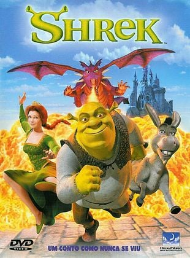

Sobre mim
Nome: Jônatas Tonicioli das Neves
Cidade: Campinas
Empresa: Bosch
Músicas Favoritas:
November Rain - Guns N' Roses
Creep - Radiohead
Filmes Favoritos:
Interestelar

Shrek 1

Curiosidades:
- Tenho um cachorro chamado Osório
- Gosto de cozinhar Strogonoff
- Gosto de estudar